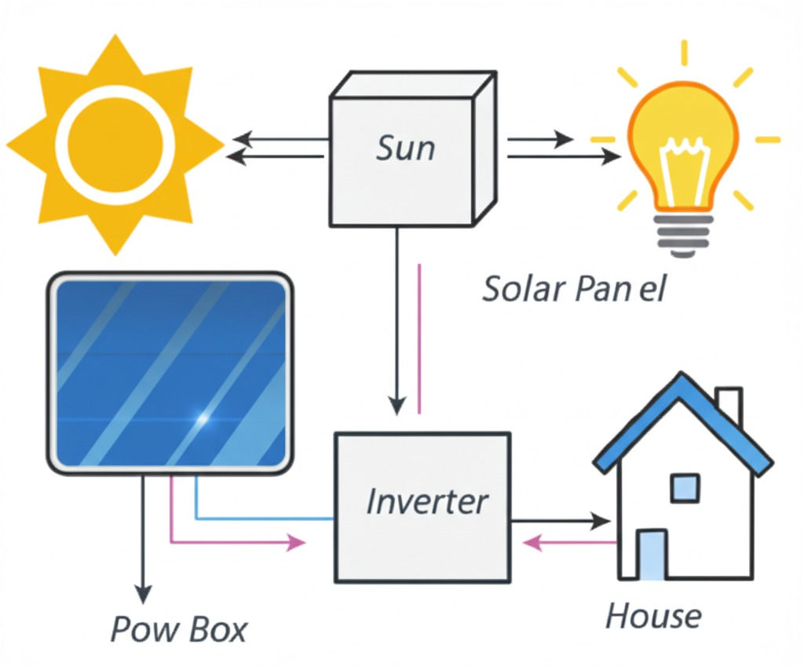
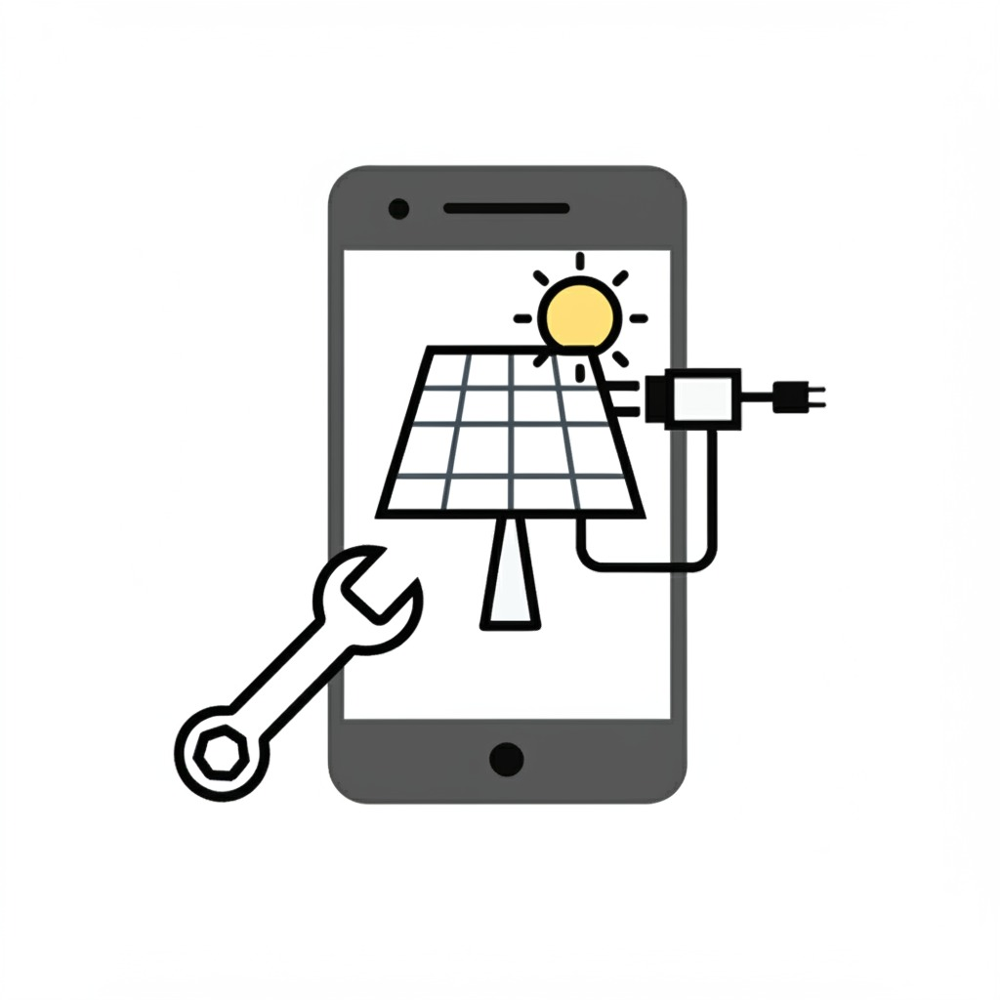
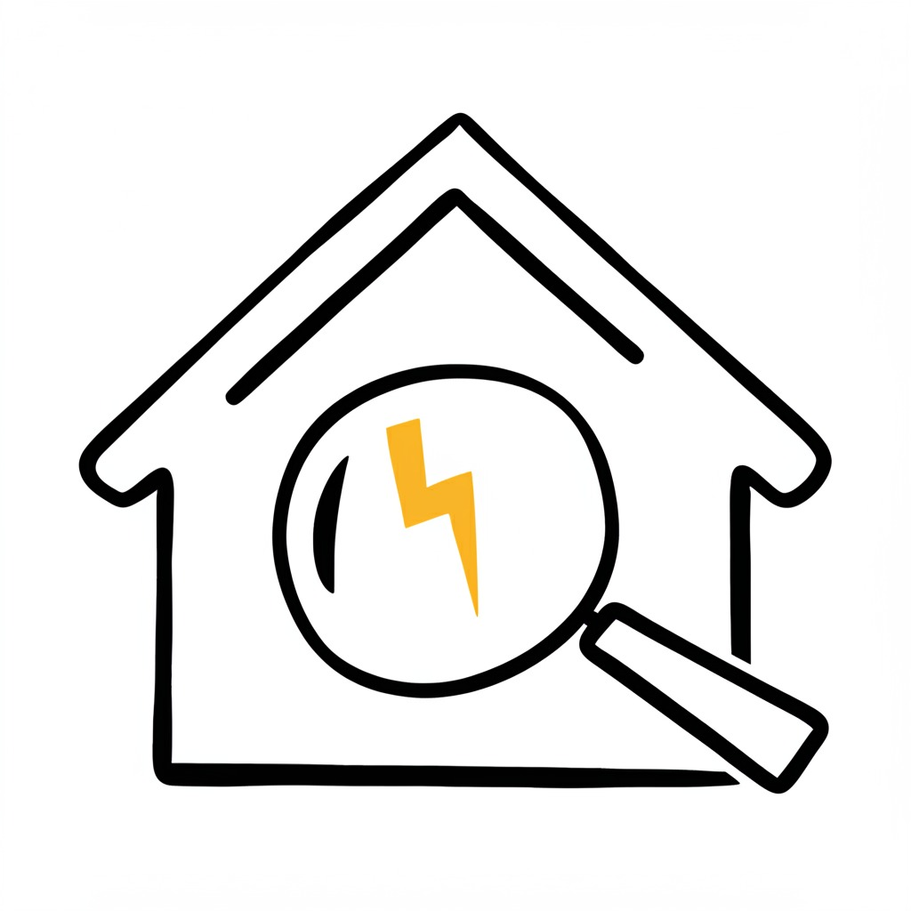

How Solar Panels Work (Interactive Demo)
A visual guide explaining photovoltaic technology. Click the image!
1. Sunlight (photons) hits the silicon cells in the panel.
2. Electrons are knocked loose, creating a direct current (DC).
3. An inverter converts the DC electricity to alternating current (AC) usable in homes.
4. The AC power flows through your home's electrical panel.

DIY: Build a Solar Phone Charger
A step-by-step guide using simple components.
1. Get small solar panel (5-6V, 1A+), optional 5V regulator, USB port, wires.
2. Connect panel to regulator (if needed).
3. Connect regulator (or panel) to USB port.
4. Test USB voltage: must be stable 5V.
5. Charge phone in sun. Enclose parts for safety.

Understanding Home Energy Audits
Learn how to identify energy waste in your home and prioritize improvements.
Detect: Room by room, note phantom loads, bulb types/usage, drafts, vent blocks, thermostat, filter, water heater temp, leaks, appliance age/seals, usage habits.
Prioritize
- High: Unplug all devices, LEDs, turn off lights, adjust thermostat, fix leaks.
- Medium: Seal drafts, change filters, smart thermostat, power strips, insulate pipes.
- Low: New appliances, insulation, duct sealing, low-flow fixtures.
Act & Track: Make changes, monitor energy bills to see savings.